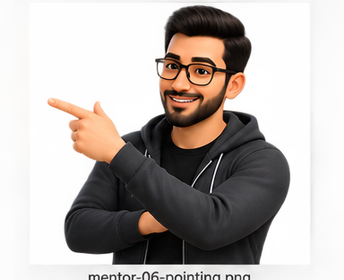
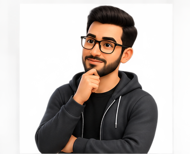
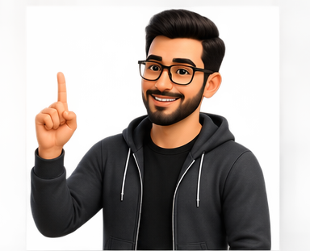
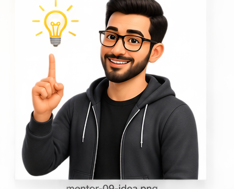

Software Paradigms
A software paradigm is a style of software development—a way of viewing reality. The same problem can therefore be analyzed, designed, and programmed differently depending on the paradigm through which the team sees it.

“A paradigm changes what you notice first. One engineer sees actions, another sees collaborating objects, and another sees data and relationships.”
Three lenses on the same reality
The system does not change—the view of the system changes. That viewpoint then shapes the analysis technique, the design representation, and even the programming style.
Procedural Paradigm
View the system mainly as a collection of processes and actions that transform inputs into outputs.
Object-Oriented Paradigm
View the system as objects that own state, behavior, responsibilities, and relationships and collaborate with one another.
Data-Oriented Paradigm
View the system through data entities, structures, relationships, storage, and manipulation of information.
How would each paradigm “see” registration?
Follow the Process
Follow the Collaborators
Follow the Information
The viewpoint flows through analysis, design, and programming
A paradigm is not only a coding-language preference. It shapes the methodology used to understand the problem, represent the solution, and implement the system.
(e.g., SQL)
One business rule, three ways to think
“Register a Student” as a sequence of actions
The mental model starts from the procedure.
- Read student and section identifiers.
- Check prerequisites.
- Check timetable conflict.
- Check seat availability.
- Insert enrollment.
- Return success or error.
“Register a Student” as collaboration
The mental model distributes responsibility among objects.
- Student exposes academic history.
- PrerequisiteRule evaluates eligibility.
- CourseSection knows capacity and schedule.
- Registration coordinates the interaction.
- Objects retain state and behavior together.
“Register a Student” as data relationships
The mental model begins with entities and relations.
- Student table identifies the learner.
- CompletedCourse supports prerequisite queries.
- CourseSection stores capacity and schedule.
- Enrollment represents the Student↔Section relationship.
- Queries and constraints manipulate and protect the data.
The same intent can look very different in code
registerStudent(studentId, sectionId) checkPrerequisite(...) checkConflict(...) checkCapacity(...) createEnrollment(...)
student.canEnroll(section) section.hasSeat() section.conflictsWith(student) registration.confirm( student, section )
SELECT ... FROM student JOIN enrollment ... JOIN course_section ... INSERT INTO enrollment (...)
Three engineers enter the same meeting

Students cannot register correctly
Everyone agrees on the business problem—but not yet on how to conceptualize the solution.
“Show me the workflow.”
One engineer begins by decomposing the registration process into transformations and steps.

“Who owns each responsibility?”
Another identifies Student, CourseSection, Rule, and Registration objects and their collaborations.

“What information must remain consistent?”
A third begins with entities, relationships, constraints, and queries. Same reality—different organizing idea.
A paradigm is deeper than syntax. Writing Java does not automatically mean the analysis and design are object-oriented, just as using SQL does not mean the entire system must be conceived only as data. The important question is: what conceptual lens is organizing the engineering work?

A software paradigm is a style of software development—a way of viewing reality. The three paradigms introduced here are procedural, object-oriented, and data-oriented. Each viewpoint aligns with different analysis, design, and programming methodologies: Structured Analysis/Design/Programming; Object-Oriented Analysis/Design/Programming; and Data-Oriented Analysis/Design with 4GL programming such as SQL.
Can the same real system contain procedural, object-oriented, and data-oriented thinking at the same time?
Yes. A large system may use objects to organize domain responsibilities, procedural algorithms inside operations, and relational/data-oriented models for persistent information. The paradigm tells you what viewpoint dominates a particular engineering decision.
Topic 04 Complete
You began by separating process from methodology, examined the realities that make development difficult, compared major process models, learned how to choose among them, explored Agile methods, and finished by seeing how a software paradigm changes the way engineers conceptualize the system itself.